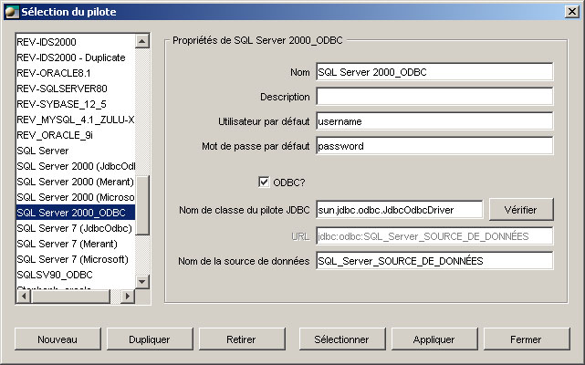
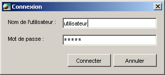

Connexion à une Base de données avec ODBC
Open ModelSphere permet d'établir une connexion ODBC avec une base de données à l'aide du pilote JDBC-ODBC.
Source de donnée ODBC
Vous devez péalablement définir une source de données ODBC.
Pour définir une source de donnée ODBC, référez-vous à la documentation fournie avec votre SGBD.
Configuration
Pour établir la connexion, allez dans le menu principal et choisissez: Outils > Base de données > Connexion.

1 - Créez une nouvelle configuration de connexion en cliquant sur le bouton Nouveau et saisissez un nom afin de pouvoir la distinguer par la suite.
2 - Choisissez l'option ODBC.
3 - Entrez le nom de votre source de donnée ODBC dans le champs désigné à cet effet.
Utilisateur et mot de passe par défaut
Il vous est possible de définir le nom de l'usager et aussi le mot de passe qui serviront à la connexion.
Toutefois, vous pouvez aussi laissez ces champs vides. L'utilisateur et le mot de passe vous seront demandés lors de la connexion.
Connexion
Une fois la configuration effectuée, cliquez sur le bouton Sélectionner. Une fenêtre vous demandant de confirmer
l'utilisateur et le mot de passe apparaîtra,
contenant les valeurs préalablement définies dans les champs utilisateur et mot de passe par défaut. Vous pouvez ajuster ces deux champs et confirmer en appuyant sur le bouton OK.

Une fenêtre vous confirmera l'état de la connexion ainsi que ses différentes informations.
Vous pouvez savoir en tout temps si ModelSphere est en connexion
en regardant si l'icone  est grisé ou non dans la barre d'état.
est grisé ou non dans la barre d'état.
Déconnexion
Pour effectuer la déconnexion, retournez dans le menu principal et choisissez: Outils > Base de données > Déconnexion.
Information sur la connexion
Pour avoir accès à l'information sur la connexion, faites: Outils > Base de données > Afficher l'information de connexion.